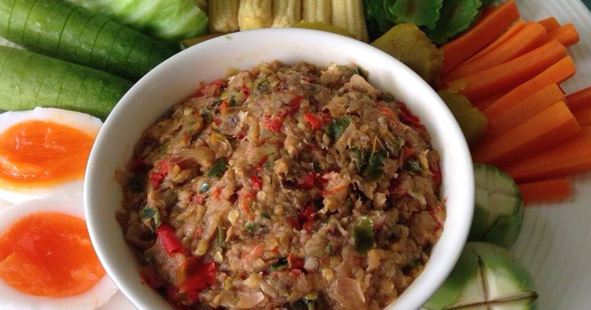
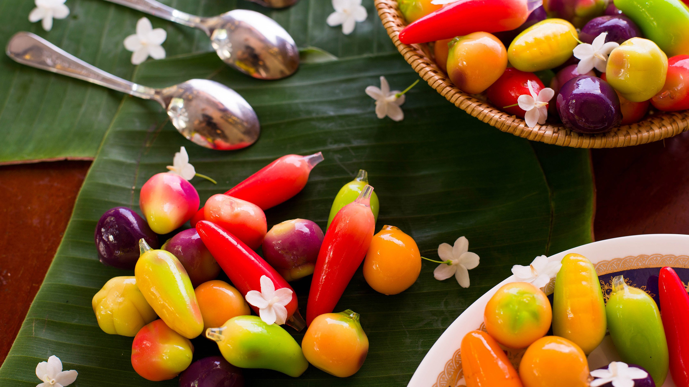

| ภาคกลาง
คนไทยภาคกลางนิยมรับประทานข้าวเจ้าเป็นอาหารหลัก มีกับข้าวหลายอย่างในแต่ละมื้อ โดยทั่วไปจะรับประทานอาหารที่มีรสกลมกล่อม ออกหวานนำเล็กน้อย วิธีปรุงซับซ้อน มีการตกแต่งจานอาหารให้สวยงามน่ารับประทาน และนิยมรับประทานร่วมกับเครื่องเคียงต่างๆ เช่น หมูหวาน ไข่เค็ม ปลาดุกฟู |

|
น้ำพริกกระปิ เป็นเมนูอาหารที่มีการตำน้ำพริก และใส่ปลาทูนึ่งเข้าไปตำร่วมด้วย ปรุงรสให้ออกเผ็ด เปรี้ยว เค็ม รับประทานกับผักสด ผักต้ม นานาชนิด การปรุงน้ำพริกให้อร่อยควรใช้ครกในการโคลกน้ำพริกกระปิ จะได้กลิ่นหอมมากกว่าการใช้เครื่องปั่น |
 |
ขนมลูกชุบ เป็นขนมของภาคกลางที่มีหน้าตาของขนมน่ารักและที่เป็นที่รักของทั้งเด็กและผู้ใหญ่ ทั้งรูปลักษณ์ที่สวยงาม และรสชาติที่หวานมันแสนสุดจะอร่อย พร้อมกับทำเองได้ง่าย และมีประโยชน์ต่อร่างกาย |
วิธีการทำน้ำพริกกระปิ
|
| > |
|